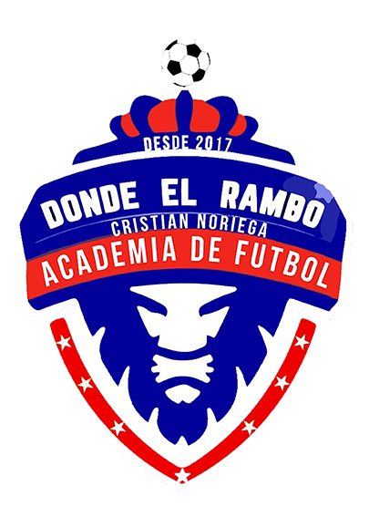
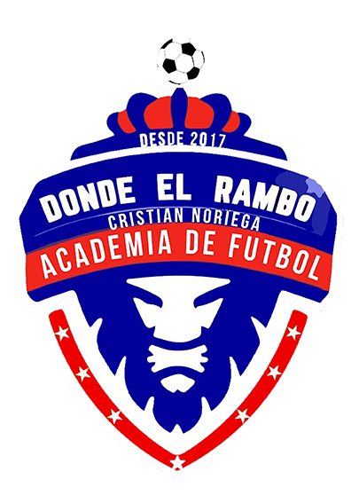

Somos la Federación Guatemalteca de SOCCA y pertenecemos a la Confederación Americana de SOCCA, quien regula la práctica de fútbol amateur en el continente americano y en el caribe. Siendo parte de la Confederación Internacional de SOCCA, con sede en el Reino Unido desde hace 6 años y con +80 países afiliados.
Nuestro proveedor oficial para administrar las ligas de SOCCA es Leisure League, respaldada por más de 40 años de experiencia y lo posiciona como la primera, más grande y mejor establecida organización proveedora de plataformas y servicios para administrar ligas de fútbol reducido (6 a 9 jugadores).
Ilustres personalidades nacionales e internacionales han unido fuerzas con el proyecto Socca Guatemala. Entre ellas se encuentran destacadas figuras como Marco Pablo Pappa, Jean Jonathan Marques (Director Técnico), Cristian Noriega y Hamilton Lópe . Todos estamos comprometidos y preparados para liderar a la selección nacional de fútbol socca hacia la Copa América Cancún 2024.


 
